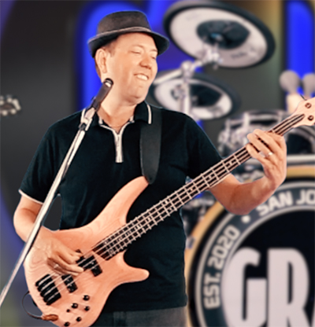

|
Mikael Vidstedt
 Early Years:
Mikael was born in Upplands Vasby, Sweden which boasts a chocolate factory and home to
the band “Europe” that had the epic rock hit ‘The Final Countdown’. So basically, chocolate and glam rock. :/
Musical Life:
As a young man Mikael was drawn to British Rock and his love of rhythm led him to buy a bass and taught himself to play by ear.
Mikael is a musical anomaly. He sang in a choir in Sweden as a child, but didn’t play in
bands until later in life. Content mastering bass in private with no plans of playing in
bands until a friend invited him to sit in on a jam session. That’s when he found out he
belonged in that environment and so did everyone else.
Mikael represents 50% of GRAY’s Scandanavian contingency.
Professional Life:
Mikael came to the U.S. in 2012 to run a development team at Oracle. It’s amazing that
Mikael taught himself bass and didn’t play in his first band until xxx and has become a core member of GRAY.
Turn-Ons:
Hot cocoa, ski lifts, ice fishing
Turn-Offs:
Luke warm cocoa, stalled ski lifts, ice fishing (conflicted on ice fishing).
|